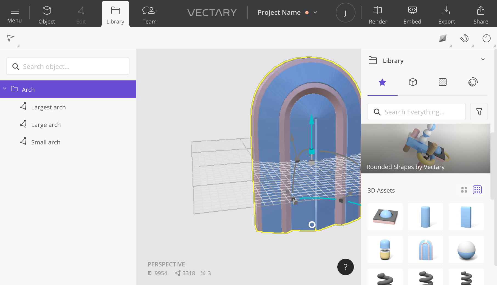
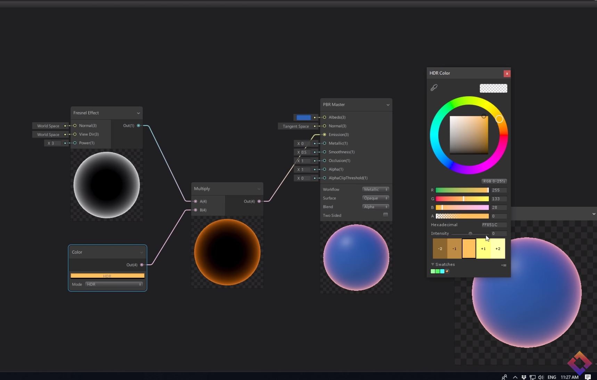
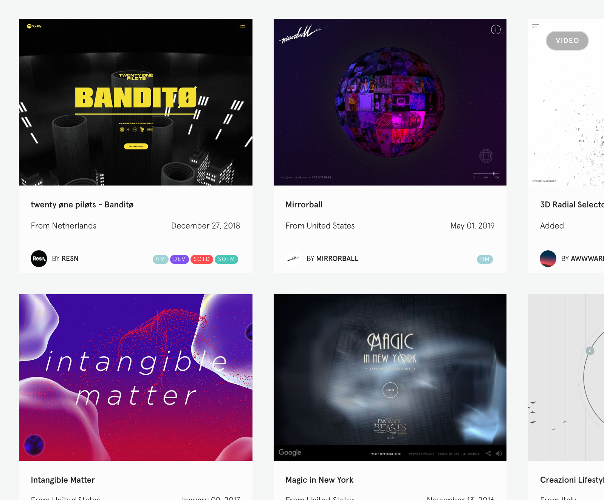
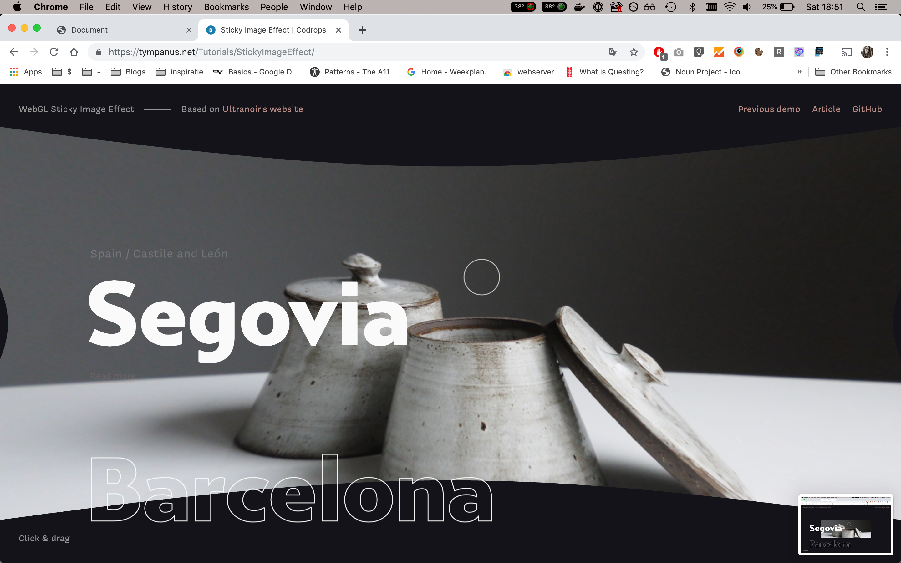
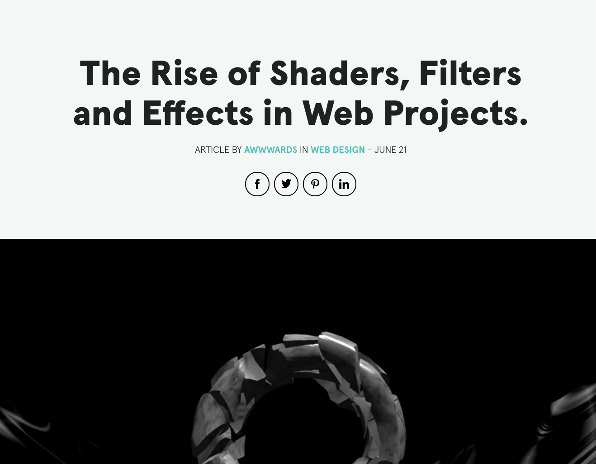
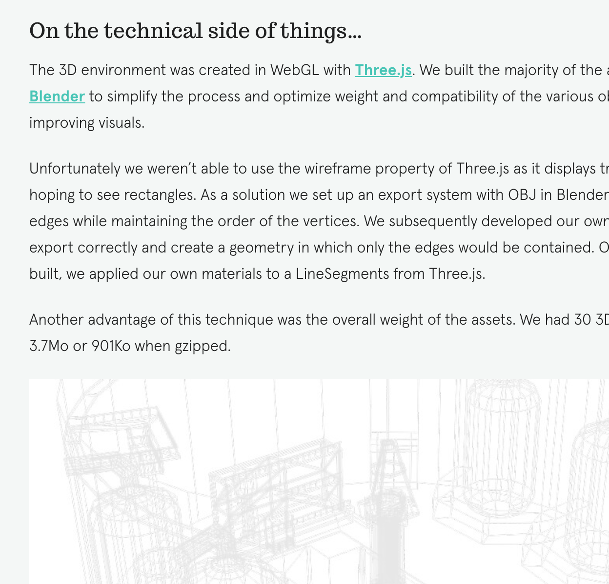
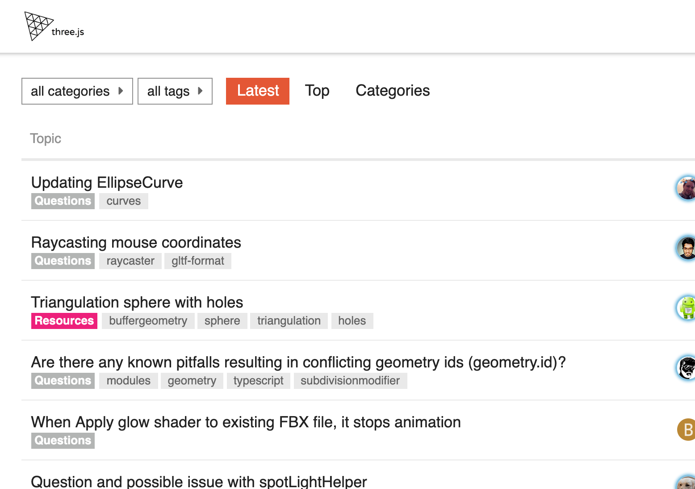
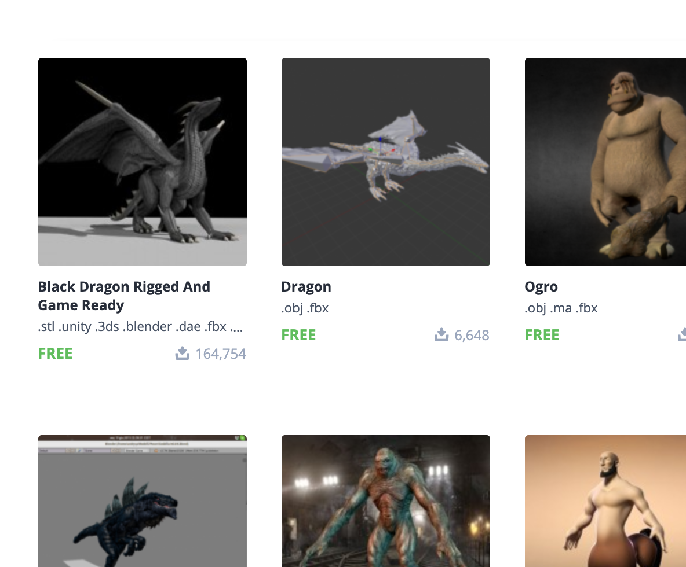

CJ gammon
David Scott Lyons slides
three inspector chrome extension
Three's own webeditor

Vectary paid webeditor
Node based Material editor
Material tool
Dom rendering
Typescript starter

Unity shadergraph

Awwwards collection

Sticky image

Rise of shaders

Case study Orano

three forum
tests
animating alpha map

Free3D